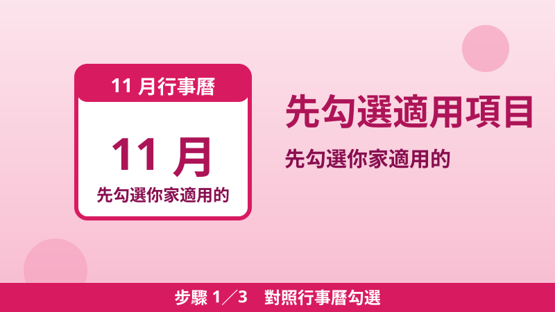
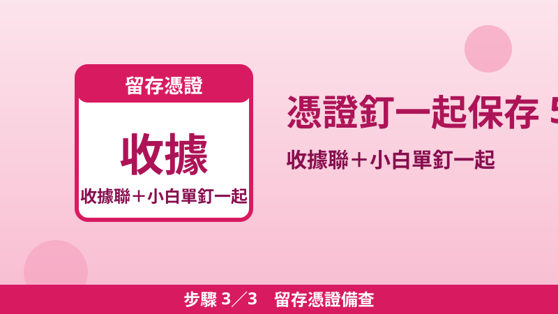

11 月補助行事曆：地價稅 11/30 前要繳、家電汰舊剩最後 2 個月，4 件事按截止日排好
11 月是補助年度的交界月：地價稅開徵、家電汰舊換新進入最後 2 個月、重陽敬老金陸續補發。最怕的不是沒補助，而是「知道有、卻錯過截止日」。這篇把 11 月前後真正有截止日的 4 件事按日期排好，先辦會過期的，再辦不急的，全部數字查證自官方公告。
家電汰舊購買發票只收到 12 月 31 日
11 月補助行事曆表
| 截止日 | 事項 | 重點 |
|---|---|---|
| 11 月 30 日 | 115 年地價稅繳納期限 | 11 月 1 日開徵；稅額 3 萬元以下可至四大超商繳納；收據聯＋小白單保存 5 年 |
| 各縣市不同 | 重陽敬老金補領、補發 | 金額、資格、補領期限各縣市不同，詳見本站專文各縣市表，逾期不補發的縣市要特別注意 |
| 12 月 31 日 | 家電汰舊換新：購買（發票）截止 | 汰換 1 級能效冷氣、冰箱，每臺補助 3,000 元；經費用罄可能提前結束 |
| 116 年 1 月 31 日 | 家電汰舊換新：申請截止 | 發票日期 112/1/1 至 115/12/31 者，申請期間至 116/1/31；諮詢專線 02-29559666 |
| 購買後 6 個月內 | 節能電器貨物稅退稅 | 1、2 級冷氣、冰箱、除濕機每臺最高退 2,000 元；措施至 2029 年 12 月 31 日；可與汰舊補助併領，合計最高 5,000 元 |
圖文三步驟：11 月先這樣盤點

步驟 1對照行事曆勾選
把上表 5 列逐項對照你家狀況：有土地、有收到稅單的勾地價稅；家裡有老舊冷氣、冰箱想換的勾汰舊補助；今年買過 1、2 級新家電的勾貨物稅退稅。沒勾到的先跳過，不用每項都辦。
步驟 2先辦有截止日的
照截止日排序：地價稅 11/30 最先到期，先繳；家電汰舊 12/31 購買截止次之，想換就趁 11–12 月買；貨物稅退稅是「購買後 6 個月內」，買了就要算好自己的 6 個月期限，不要等到年底才想起來。

步驟 3留存憑證備查
超商繳地價稅要同時拿到「繳款書收據聯」和收銀機「交易明細表（小白單）」，兩張釘在一起保存 5 年；家電補助、退稅的發票、保證書也要留好，補件時才拿得出來。
地價稅 11 月繳納：收到稅單先做 3 件事
- 核對稅單：納稅義務人姓名、課稅年別、稅目、應繳金額是否正確。
- 超商繳納拿雙憑證：稅額 3 萬元以下可至四大超商繳納，現場確認金額、稅單筆數與收據相符，並同時取得收據聯與小白單。
- 沒收到稅單：可向地方稅務局申請補發，或持自然人憑證等至超商多功能事務機連線查詢列印，也可登入地方稅網路申報作業系統線上查繳；疑問撥免付費專線 0800-000321。
明年先記一件事：地價稅自用住宅優惠 2‰
地價稅自用住宅用地優惠稅率為 2‰，一般用地稅率為 10‰ 至 55‰，稅負相差 4 倍以上。申請期限是每年開徵 40 日前（即 9 月 22 日），逾期申請次年起才能適用。今年 9 月 22 日已過、來不及的人，明年記得在 9 月 22 日前提出；土地所有權人本人在戶政事務所辦理遷入戶籍時，可一併申請，戶政機關會主動通報財稅局。
常見問題
家電汰舊補助和貨物稅退稅可以一起領嗎？
可以。經濟部汰舊補助專區明載，申請本補助之家電產品除可向國稅局申請退還減徵貨物稅外，不得申請其他機關補助；汰舊每臺 3,000 元加退稅最高 2,000 元，合計最高 5,000 元。
今年買了新冷氣但沒汰舊，還能退稅嗎？
可以。貨物稅退稅不用汰舊，只要是 1、2 級能效的新冷氣、冰箱、除濕機，購買後 6 個月內向任一國稅局申請即可，措施至 2029 年 12 月 31 日。
📖 延伸閱讀：115 年地價稅 11 月開徵：繳納期限、2‰ 自用住宅優惠、收到稅單先核對 3 件事 ／ 家電汰舊換新補助申請教學：冷氣、冰箱每臺 3,000 元，只到 2026 年底 ／ 節能電器貨物稅退稅教學：免汰舊、每臺最高退 2,000 元（到 2029 年） ／ 2026 重陽敬老金總整理：各縣市長輩能領多少、沒領到怎麼補領
📎 資料來源
- 財政部稅務入口網（臺中市政府地方稅務局）：115 年度地價稅 11 月 1 日開徵、繳納期限至 11 月 30 日、稅額 3 萬元以下可至超商繳納、超商繳稅 3 步驟、保存 5 年、免付費 0800-000321：etax.nat.gov.tw
- 財政部稅務入口網（嘉義市政府財政稅務局）：地價稅自用住宅用地優惠稅率 2‰、一般用地 10‰ 至 55‰、每年開徵 40 日（即 9 月 22 日）前申請、逾期次年適用、戶籍遷入可一併申請：etax.nat.gov.tw
- 經濟部住宅家電汰舊換新節能補助專區：發票日期 112/1/1 至 115/12/31、申請期間 112/2/1 至 116/1/31、每臺 3,000 元、經費用罄提前結束、可併同申請貨物稅退稅、諮詢專線 02-29559666：save3000.moeaea.gov.tw
- 財政部北區國稅局（財政部官網）：1、2 級冷氣、冰箱、除濕機每臺最高退 2,000 元、措施延長至 2029 年 12 月 31 日：mof.gov.tw
最後查證日期：2026-10-27
免責聲明：本文僅供參考，補助資格與金額以政府官方最新公告為準，申請前請至官方網站或洽受理機關確認。